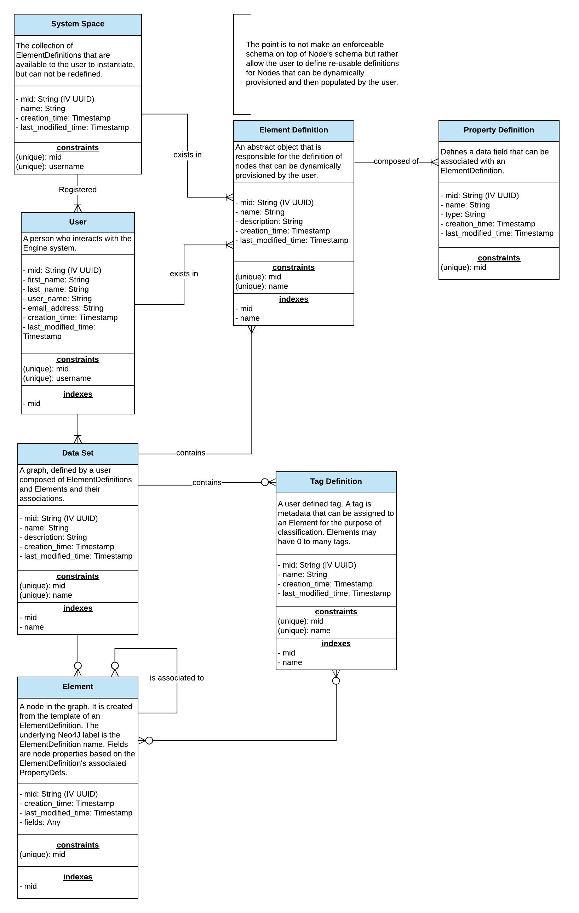

The Data Model
The application data model can be seen in the below ERD diagram. A full Explanation of all entities is provided in the Node Definitions section.

Node Definitions
SystemSpace
The collection of ElementDefinitions that are available to the user to instantiate, but can not be redefined. There is currently only one instance of a SystemSpace node in a local graph.
| Field Name | Description | Type | Example | Constraints | Indexed | Deprecated |
|---|---|---|---|---|---|---|
| mid | The unique ID of the graph node. | IV UUID | 329c4c3f-4213-4c82-90fb-05bac8943596 | Unique | Yes | |
| name | A label for the system space. | String | System Space | Unique | ||
| creation_time | When the node is created. | Timestamp | 1535023012361 | |||
| last_modified_time | When the node was last modified. | Timestamp | 1535023012361 |
User
A person who interacts with the application.
| Field Name | Description | Type | Example | Constraints | Indexed | Deprecated |
|---|---|---|---|---|---|---|
| mid | The unique ID of the graph node. | IV UUID | 329c4c3f-4213-4c82-90fb-05bac8943596 | Unique | Yes | |
| first_name | The user's given name. | String | John | |||
| last_name | The user's family name. | String | Smith | |||
| user_name | The user's prompted identifier. Used for authentication. | String | jsmith | Unique | ||
| email_address | The user's recovery email address. | String | jsmith@smith.com | |||
| creation_time | When the node is created. | Timestamp | 1535023012361 | |||
| last_modified_time | When the node was last modified. | Timestamp | 1535023012361 |
ElementDefinition
An abstract object that is responsible for the definition of nodes that can be dynamically provisioned by the user.
| Field Name | Description | Type | Example | Constraints | Indexed | Deprecated |
|---|---|---|---|---|---|---|
| mid | The unique ID of the graph node. | IV UUID | 329c4c3f-4213-4c82-90fb-05bac8943596 | Unique | Yes | |
| name | The name of the Element Definition. | String | Note | Unique | Yes | |
| description | Explanation of what the Element Definition is for. | String | Captures user thoughts. | |||
| creation_time | When the node is created. | Timestamp | 1535023012361 | |||
| last_modified_time | When the node was last modified. | Timestamp | 1535023012361 |
PropertyDefinition
Defines a data field that can be associated with an ElementDefinition. Note: Need to flush out the valid types. (Engine Issue #48)
| Field Name | Description | Type | Example | Constraints | Indexed | Deprecated |
|---|---|---|---|---|---|---|
| mid | The unique ID of the graph node. | IV UUID | 329c4c3f-4213-4c82-90fb-05bac8943596 | Unique | Yes | |
| name | The name of the field shall have. | String | Note | |||
| type | The data type the field shall have. | String | Any | |||
| creation_time | When the node is created. | Timestamp | 1535023012361 | |||
| last_modified_time | When the node was last modified. | Timestamp | 1535023012361 |
DataSet
A graph, defined by a user composed of ElementDefinitions and Elements and their associations.
| Field Name | Description | Type | Example | Constraints | Indexed | Deprecated |
|---|---|---|---|---|---|---|
| mid | The unique ID of the graph node. | IV UUID | 329c4c3f-4213-4c82-90fb-05bac8943596 | Unique | Yes | |
| name | The name of the Data Set. | String | Product Enhancements | Unique | Yes | |
| description | Explanation of what the Data Set is for. | String | My Product Thoughts | |||
| creation_time | When the node is created. | Timestamp | 1535023012361 | |||
| last_modified_time | When the node was last modified. | Timestamp | 1535023012361 |
Element
A node in the graph. It is created from the template of an ElementDefinition. The Element is created with two associated Labels: The ElementDefinition name. The reserved word: element.
Fields are node properties based on the ElementDefinition's associated PropertyDefinition. Each associated PropertyDefinition results in a unique field added to the Element. The field's name and type match what is specified on the PropertyDefinition.
| Field Name | Description | Type | Example | Constraints | Indexed | Deprecated |
|---|---|---|---|---|---|---|
| mid | The unique ID of the graph node. | IV UUID | 329c4c3f-4213-4c82-90fb-05bac8943596 | Unique | Yes | |
| fields | See above note. | Any | n/a | |||
| creation_time | When the node is created. | Timestamp | 1535023012361 | |||
| last_modified_time | When the node was last modified. | Timestamp | 1535023012361 |
Tag Definition
A user defined tag. A tag is metadata that can be assigned to an Element for the purpose of classification. Elements may have 0 to many tags.
| Field Name | Description | Type | Example | Constraints | Indexed | Deprecated |
|---|---|---|---|---|---|---|
| mid | The unique ID of the graph node. | IV UUID | 329c4c3f-4213-4c82-90fb-05bac8943596 | Unique | Yes | |
| name | The name of the tag. | String | person, place, thing | Unique | Yes | |
| creation_time | When the node is created. | Timestamp | 1535023012361 | |||
| last_modified_time | When the node was last modified. | Timestamp | 1535023012361 |
Database Constraints & Index Creation
All database constraints and indexes are created upon initializing a new database. This is performed by org.machine.engine.graph.internal.SchemaCreator. See the code documentation for more details.